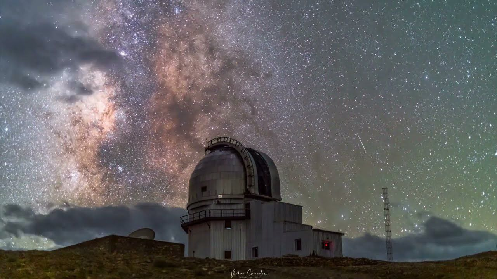
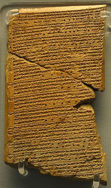
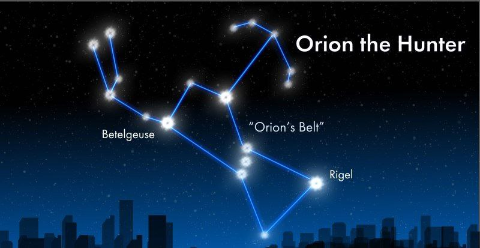

“Earth is a small town with many neighbourhoods in a very big universe” — Ron Garan.
As the stars move across the sky each night people from the earth have looked up and wondered about their place in the universe. The night sky and astronomical bodies have been a source of wonder and speculation since the development of the earliest civilizations. Astronomy takes us on a journey of discovery, from a detailed study of our solar system to the far distant galaxies and outermost reaches of the universe.
What is Astronomy?
The term astronomy comes from 2 Greek words; astron - ‘star,’ and ‘nemein’ — ’to name. However, astronomy is not just study of the stars; rather it is the study of celestial phenomena. Astronomy is one of the oldest scientific disciplines striving to understand the nature of the universe and humankind’s place in it.

Mesopotamia
The origins of Western astronomy can be found in Mesopotamia, the “land between the rivers” Tigris and Euphrates, where the ancient kingdoms of Sumer, Assyria, and Babylonia were located. Pre Mesopotamian civilizations had usually linked the celestial objects to the spirits, but record still exist which shows that, as early as 3000 B.C., the Babylonian recorded some constellations and mapped the recurrent of astronomical events.
One of the oldest astronomical documents is Venus tablet. It is believed that this astronomical record was first compiled during the reign of King Ammisaduqa, the fourth ruler after Hammurabi (the sixth Amorite king of the old Babylonian Empire). The tablet gives the rise times of Venus and its first and last visibility on the horizon before or after sunrise and sunset in the form of lunar dates. These positions are given for a period of 21 years.

Chinese Astronomy
Chinese astronomers correctly calculated the eclipse cycle. Chinese civilization was the first civilization to have determined that there are 365 days in a year, by calculating the movement of the star against the background stars. The Chinese used a Lunisolar calendar (which identifies years, months, dates according to astronomical phenomena).
According to Chinese mythology, an eclipse occurred when a dragon was eating the sun and that only way to defeat the dragon was to make as much as noise possible. In the event of an eclipse, people would make a mighty racket, which would scare the dragon off, and naturally, the sun would return.
Indian Astronomy
Indian astronomy has a long history. Some of the earliest roots of Indian astronomy can be dated to the period of Indus Valley civilization or earlier. Ancient Indian astronomy may be classified into two main categories:
The Vedic Astronomy
The post Vedic Astronomy
The vedic astronomy is the astronomy of the vedic period i.e. the astronomy found in the vedic Saṃhitas and Brahmans and allied literature. The principal avocation of the people in the vedic times being the performance of the vedic sacrifices at the times prescribed by the śastras, it was necessary to have accurate knowledge of the science of time so that the times prescribed for performing the various vedic sacrifices could be correctly predicted well in advance. Astronomy in those times, therefore, was essentially the science of time-determination. It centred round the Sun and Moon and its aim was to study the natural divisions of time caused by the motion of the Sun and Moon, such as days, months, seasons and years, special attention being paid to the study of the times of occurrence of new moons, full moons, equinoxes and solstices.
The Rigveda shows that the Indians divided the year into 360 days, and the year was subdivided into 12 months of 30 days. Every 5 years, two intercalary periods were added to bring the calendar back in line with the solar year, ensuring that years averaged 366 days. However, the Indian year still migrated four days in every five years, and Indian astronomers constantly tweaked and adjusted their calendars over the millennia. The text also shows that the Indians used four cardinal points for ensuring the correct orientation of altars.
The Jyotisa Vedanga, the first Vedic text to mention astronomical data, records events going back as far as 4000 BCE, although many archaeoastronomers believe that this text may include observations from as early as 11,000 BCE. They point out that some of the records may have been copied from earlier manuscripts, but this is an area where more research is needed, as many of the references are unclear and couched in religious terminology.
The first proper astronomy began in the 5th century. Indian astronomer Aryabhata began to adopt a more rigorous, mathematical approach to astronomy. Aryabhata added to the heliocentric theory, proposing the idea that the moon reflects the light of the sun, a theory also proposed by some Greeks but not widely adopted. His book, the ‘Aryabhatiya,’ was translated into Latin in the 13th Century. This work gave the Europeans some methods for measuring the volume of spheres and the area of triangles, as well as methods for calculating square roots and cube roots. He also calculated the length of a sidereal day (23 hours , 56 minutes, and 4.1 seconds). Aryabhata is known as father of ancient Indian astronomy.
Bhaskara-II from 12th century worked on both mathematics and astronomy . He had done a vast research on sun, moon, stars and other planets. He wrote a scripture named “Siddhanta Siromani”. There he discussed about math and astronomy.
Pythagoras’ Globe and Eratosthene’s Calculation of Circumference of Earth
Anaximander was first who suggest that the earth floats like a globe in free space. Pythagoras was the first to assert that Earth was a globe rather than a cylinder as had been widely believed beforehand. He noticed that during a lunar eclipse the shadow of the earth on the moon. Also, he observed that the stars appear differently depending on the observer’s location.
Eratosthenes, a greek mathematician successfully calculated the circumference of the Earth. Eratosthense heard of a place called Syene, where the sun shone directly down a well at noon on the summer solistice. This is due to its location almost on the Tropic of cancer, that’s why the sun would be perfectly overhead. He measured an angle of a stick perpendicular to the ground cast a shadow that was 7.12 degrees from perpendicular. That means, Alexandria is 7.12 degree away from Syene. Which means, if two sticks ( one at Alexandria and another one at Syene) are extended to the centre of the earth they will intersect each other by 7.12 degree angle. So, 7.12 degree is almost 1/50 th time of a full circle (360 degree). Now all he had to do was find the distance from Syene to Alexandria and multiply it by 50 to get the earth’s circumference. The distance figure he used was 805 kilometers and he multiplied it with 50, that means, 40,096 kilometers. Earth circumference is \(40,075.017\) km, which is almost near to the Eratosthenes’ calculation.
Although there are errors in Eratosthenes’ measurement, but it was certainly impressive for almost 2000 years ago.
Ptolemy and Asristotle’s Cosmic Legacy
Ptolemy came to represent a mathematical tradition, one focused on developing mathematical models with predictive power. Ptolemy was also interested in deploying his model of the heavens to describe its physical reality. However, his most important work was the mathematical models and data he used for predicting the motion of heavenly bodies. For a long time, his name was synonymous with the model of the heavens. His scripture named Almagest, is a 2nd century Greek language mathematical and astronomical scripture. here, he discussed about geocentric model of our universe which was accepted for more than 2000 years. Aristotle came to be known for putting forward the physical model of the heavens.
Galileo Galilei
Galileo Galilei was an Italian astronomer, Physicist and Engineer. The huge turning point of astronomy was the telescope. It was invented by Galileo Galilei. He discovered the moons of the Jupiter. One of his great work was to observe the phases of Venus. He observed that Venus exhibits a full set of phases similar to that of the Moon.
Celestial Alignment
Archaeologists who specialize in investigating astronomical ruins are called archeo-astronomers. They discovered many celestial alignment. E.g. in the Neolithic structure, Stonehenge, found in Wiltshire England the stone pillars are arranged so as to trace the position of the sun and the moon during solistices. Others argue that stonhenge is not meant to be celestially aligned and if this is the case then it is just a coincidence. The great pyramid of the Giza seems to be aligned with Orion’s belt, so as to guide the death of Pharaoh to the stars of the belt, which were associated with the god of death, Osiris.

History of astronomy is a really long story. Our ancestors made many scripture, sculpture to unveil the mystery of our universe. As we know we are a part of this universe, so we must know about our origin. Astronomy is the one of the main doorway to know the mystery of our origin.
